Materialpaket Winter und Advent für die 7. Klasse: 10 Lesespurgeschichten mit Rätselaufgaben fächerübergreifend (Weihnachtsoratorium, Südpol, Eishockey & mehr)

Bohren an der Ständerbohrmaschine – sicher und genau – Lesespurgeschichte mit Rätselaufgaben (Klasse 7)
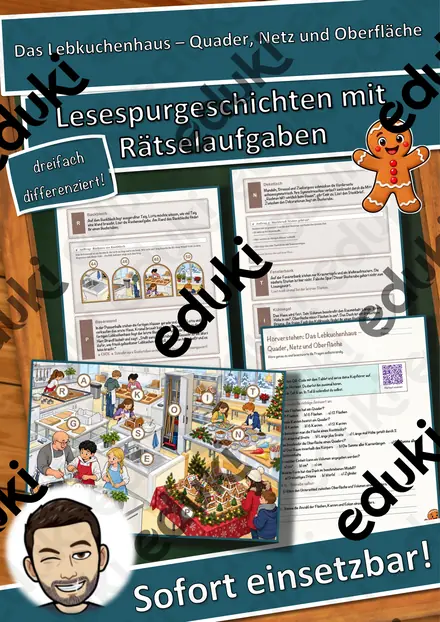
Das Lebkuchenhaus – Quader, Netz und Oberfläche – Lesespurgeschichte mit Rätselaufgaben (Klasse 7)

Der Jahresrückblick – eine Radiosendung entsteht – Lesespurgeschichte mit Rätselaufgaben (Klasse 7)
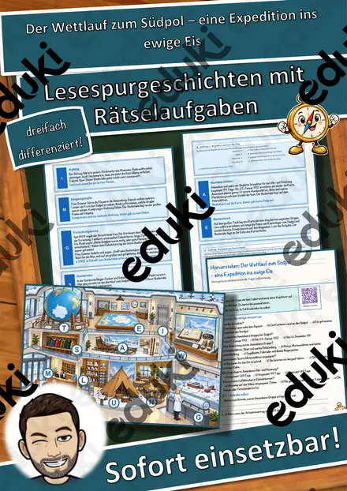
Der Wettlauf zum Südpol – eine Expedition ins ewige Eis – Lesespurgeschichte mit Rätselaufgaben (Klasse 7)

Lantern Night Adventure – Lesespurgeschichte mit Rätselaufgaben auf Englisch (Klasse 7)
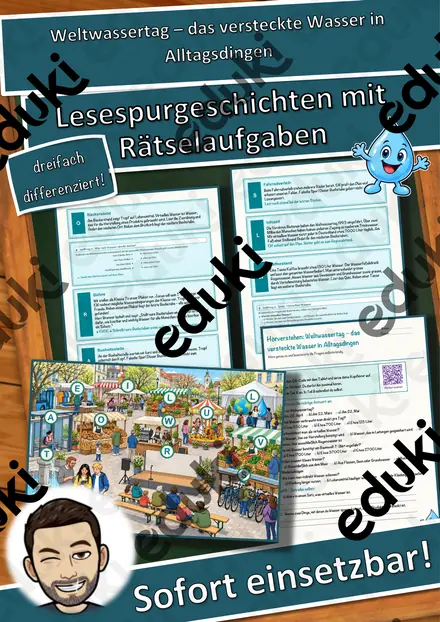
Weltwassertag – das versteckte Wasser in Alltagsdingen – Lesespurgeschichte mit Rätselaufgaben (Klasse 7)
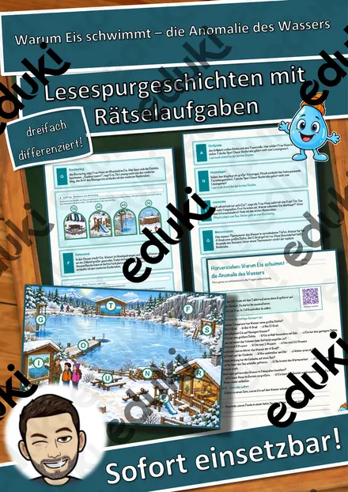
Warum Eis schwimmt – die Anomalie des Wassers – Lesespurgeschichte mit Rätselaufgaben (Klasse 7)

Volksmusik in den Alpen – Jodeln, Hackbrett und Alphorn – Lesespurgeschichte mit Rätselaufgaben (Klasse 7)
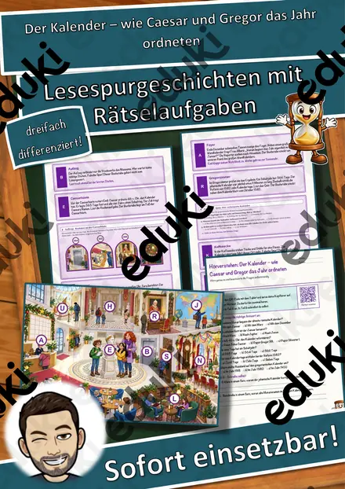
Der Kalender – wie Caesar und Gregor das Jahr ordneten – Lesespurgeschichte mit Rätselaufgaben (Klasse 7)

Merkmale einer Kurzgeschichte – Lesespurgeschichte mit Rätselaufgaben (Klasse 7)

Das Weihnachtsoratorium – Chor, Arie und Rezitativ – Lesespurgeschichte mit Rätselaufgaben (Klasse 7)

Ein Winter im Dorf des Mittelalters – Bauern und Grundherr – Lesespurgeschichte mit Rätselaufgaben (Klasse 7)
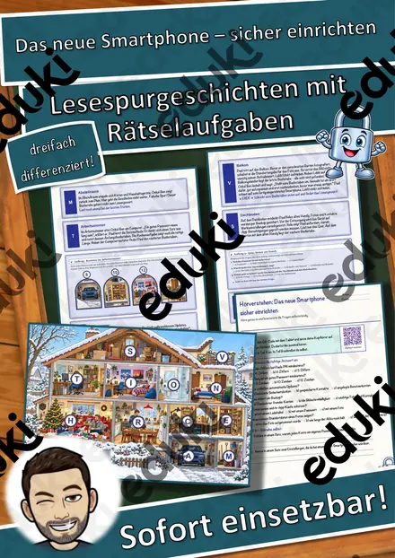
Das neue Smartphone – sicher einrichten – Lesespurgeschichte mit Rätselaufgaben (Klasse 7)
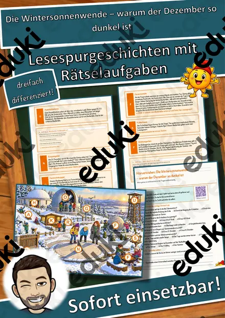
Die Wintersonnenwende – warum der Dezember so dunkel ist – Lesespurgeschichte mit Rätselaufgaben (Klasse 7)
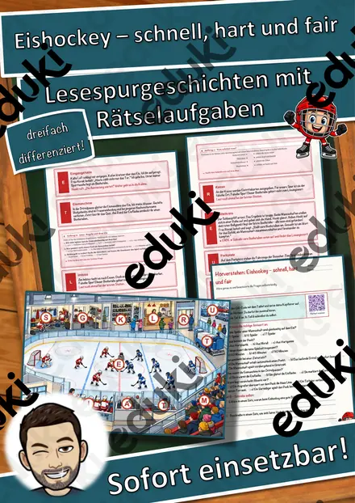
Eishockey – schnell, hart und fair – Lesespurgeschichte mit Rätselaufgaben (Klasse 7)

Wichern und der Adventskranz – Hilfe für Kinder in Not – Lesespurgeschichte mit Rätselaufgaben (Klasse 7)
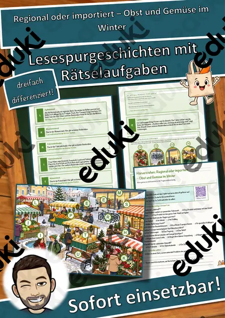
Regional oder importiert – Obst und Gemüse im Winter – Lesespurgeschichte mit Rätselaufgaben (Klasse 7)

Rauchen und Vapes – warum Nikotin abhängig macht – Lesespurgeschichte mit Rätselaufgaben (Klasse 7)

Metall formen – anreißen, sägen, feilen, biegen – Lesespurgeschichte mit Rätselaufgaben (Klasse 7)

Organspende – eine Entscheidung fürs Leben – Lesespurgeschichte mit Rätselaufgaben (Klasse 7)
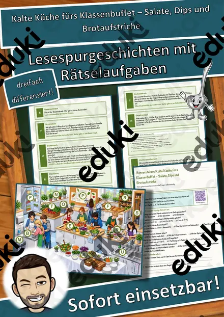
Kalte Küche fürs Klassenbuffet – Salate, Dips und Brotaufstriche – Lesespurgeschichte mit Rätselaufgaben (Klasse 7)

Bonfire Night – ein Herbstfest in England – Lesespurgeschichte mit Rätselaufgaben (Klasse 7)

Balladen – unheimliche Geschichten in Versen – Lesespurgeschichte mit Rätselaufgaben (Klasse 7)
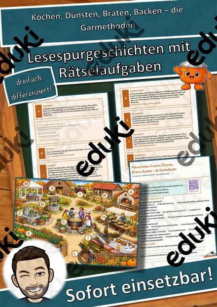
Kochen, Dünsten, Braten, Backen – die Garmethoden – Lesespurgeschichte mit Rätselaufgaben (Klasse 7)

Wenn’s ernst wird – Katastrophenschutz in Deutschland – Lesespurgeschichte mit Rätselaufgaben (Klasse 7)
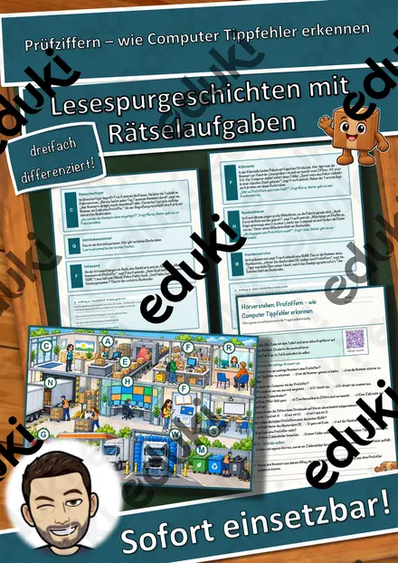
Prüfziffern – wie Computer Tippfehler erkennen – Lesespurgeschichte mit Rätselaufgaben (Klasse 7)
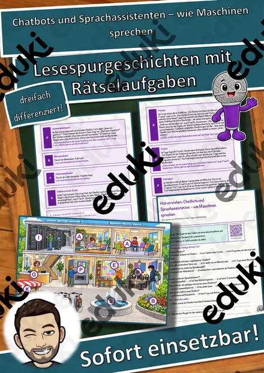
Chatbots und Sprachassistenten – wie Maschinen sprechen – Lesespurgeschichte mit Rätselaufgaben (Klasse 7)
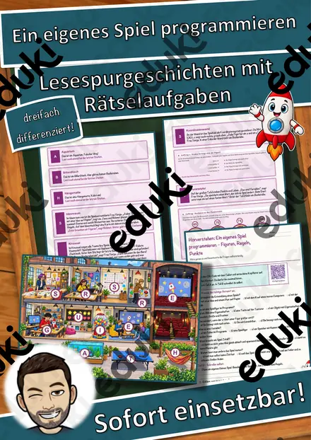
Ein eigenes Spiel programmieren – Figuren, Regeln, Punkte – Lesespurgeschichte mit Rätselaufgaben (Klasse 7)
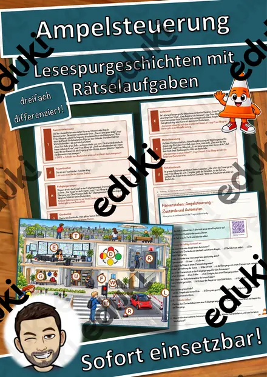
Ampelsteuerung – Zustände und Automaten – Lesespurgeschichte mit Rätselaufgaben (Klasse 7)
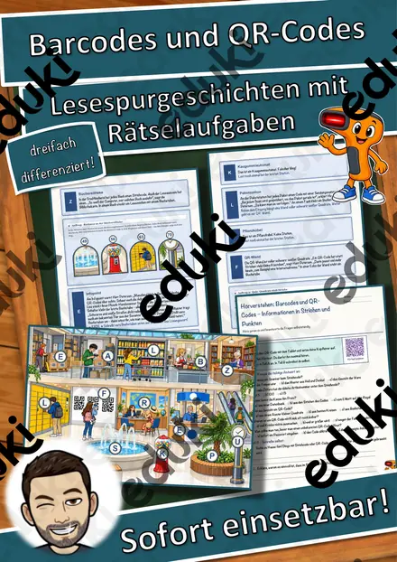
Barcodes und QR-Codes – Informationen in Strichen und Punkten – Lesespurgeschichte mit Rätselaufgaben (Klasse 7)
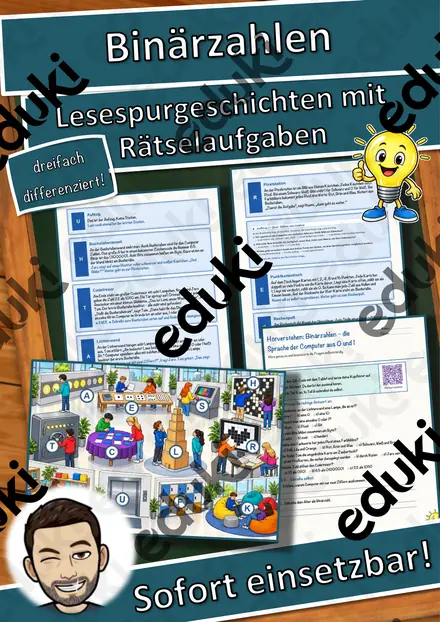
Binärzahlen – die Sprache der Computer aus 0 und 1 – Lesespurgeschichte mit Rätselaufgaben (Klasse 7)
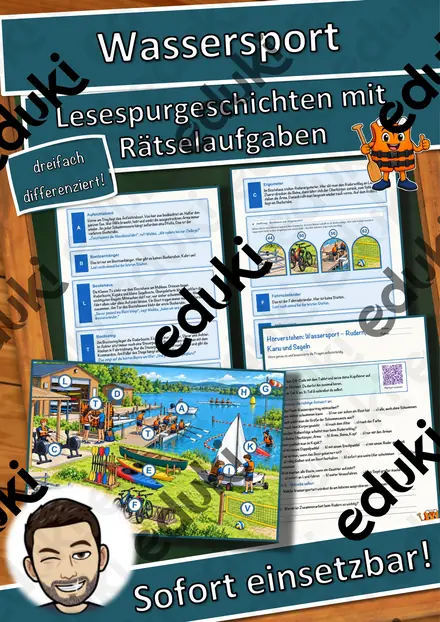
Wassersport – Rudern, Kanu und Segeln – Lesespurgeschichte mit Rätselaufgaben (Klasse 7)
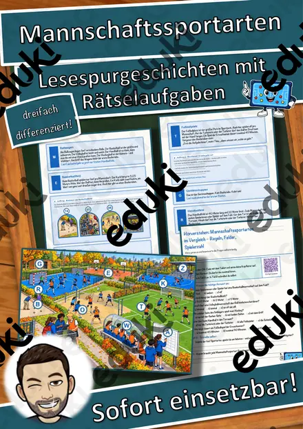
Mannschaftssportarten im Vergleich – Regeln, Felder, Spielerzahl – Lesespurgeschichte mit Rätselaufgaben (Klasse 7)
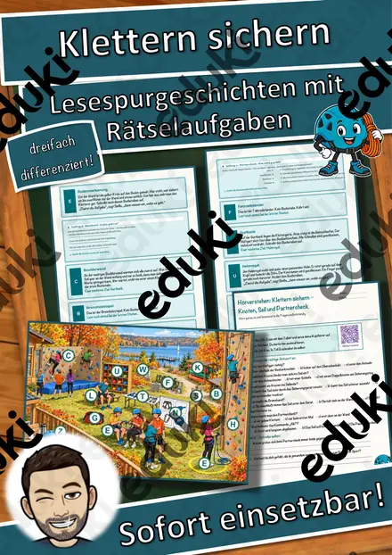
Klettern sichern – Knoten, Seil und Partnercheck – Lesespurgeschichte mit Rätselaufgaben (Klasse 7)
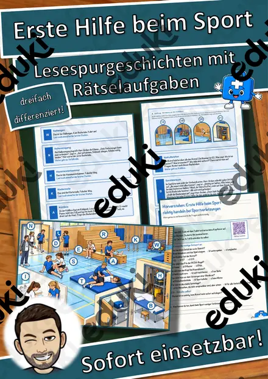
Erste Hilfe beim Sport – richtig handeln bei Sportverletzungen – Lesespurgeschichte mit Rätselaufgaben (Klasse 7)
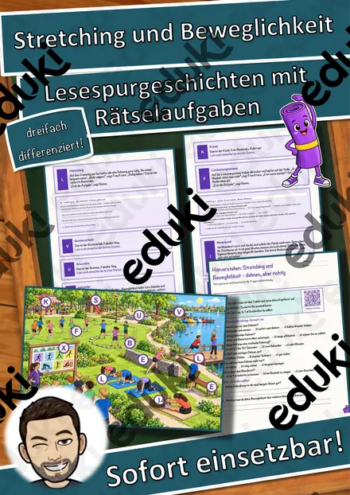
Stretching und Beweglichkeit – dehnen, aber richtig – Lesespurgeschichte mit Rätselaufgaben (Klasse 7)
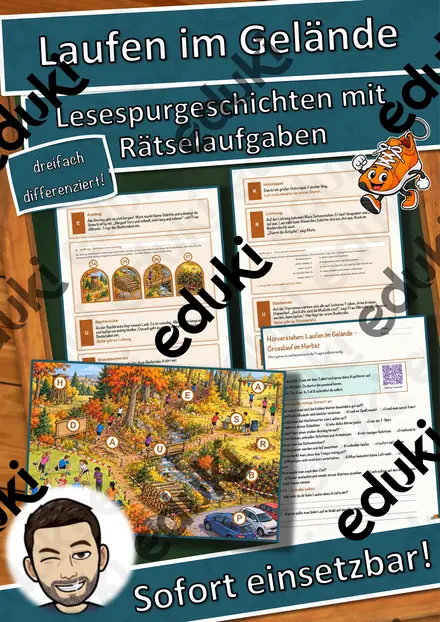
Laufen im Gelände – Crosslauf im Herbst – Lesespurgeschichte mit Rätselaufgaben (Klasse 7)
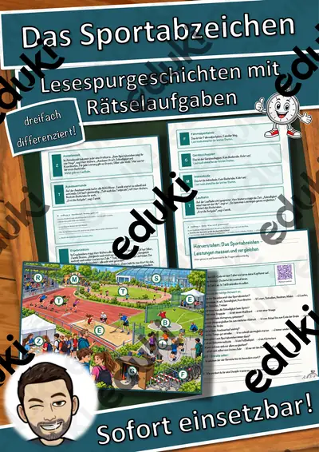
Das Sportabzeichen – Leistungen messen und vergleichen – Lesespurgeschichte mit Rätselaufgaben (Klasse 7)
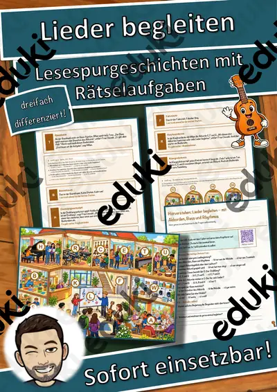
Lieder begleiten – mit Akkorden, Bass und Rhythmus – Lesespurgeschichte mit Rätselaufgaben (Klasse 7)
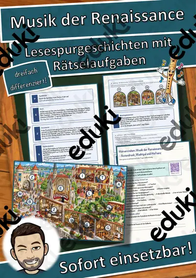
Musik der Renaissance – Notendruck, Madrigal und Hoftanz – Lesespurgeschichte mit Rätselaufgaben (Klasse 7)
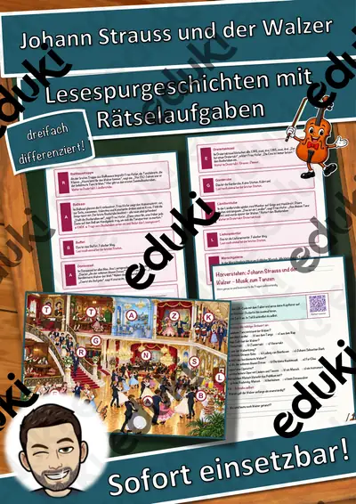
Johann Strauss und der Walzer – Musik zum Tanzen – Lesespurgeschichte mit Rätselaufgaben (Klasse 7)
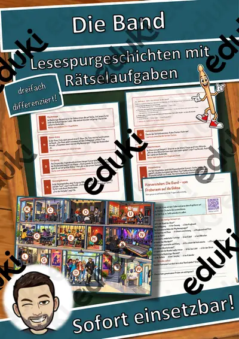
Die Band – vom Proberaum auf die Bühne – Lesespurgeschichte mit Rätselaufgaben (Klasse 7)

Musik im Mittelalter – Mönche, Minnesänger und Spielleute – Lesespurgeschichte mit Rätselaufgaben (Klasse 7)
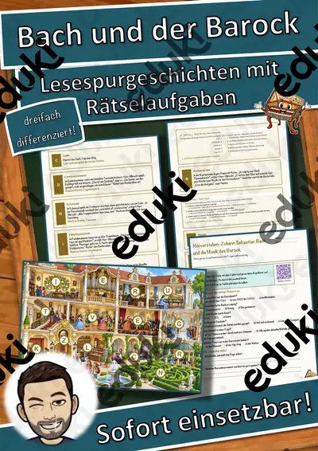
Johann Sebastian Bach und die Musik des Barock – Lesespurgeschichte mit Rätselaufgaben (Klasse 7)

Die Oper – Musik, die Geschichten erzählt – Lesespurgeschichte mit Rätselaufgaben (Klasse 7)
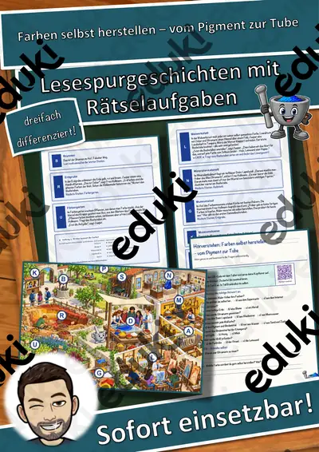
Farben selbst herstellen – vom Pigment zur Tube – Lesespurgeschichte mit Rätselaufgaben (Klasse 7)
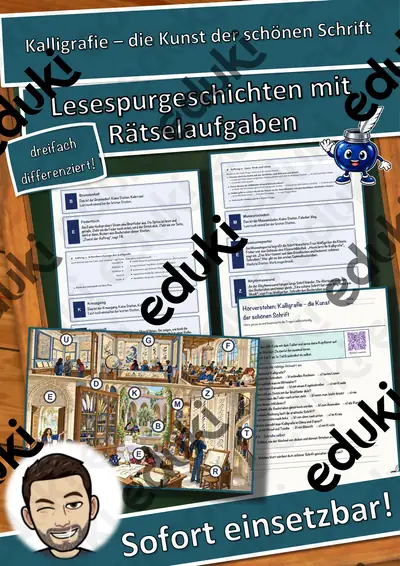
Kalligrafie – die Kunst der schönen Schrift – Lesespurgeschichte mit Rätselaufgaben (Klasse 7)
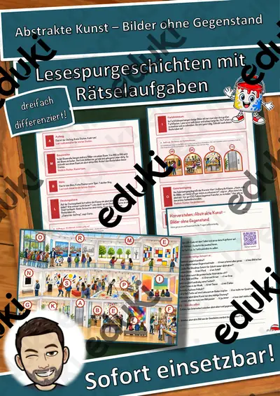
Abstrakte Kunst – Bilder ohne Gegenstand – Lesespurgeschichte mit Rätselaufgaben (Klasse 7)
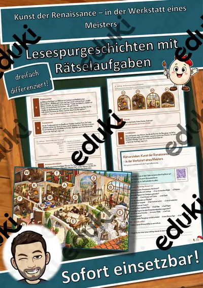
Kunst der Renaissance – in der Werkstatt eines Meisters – Lesespurgeschichte mit Rätselaufgaben (Klasse 7)
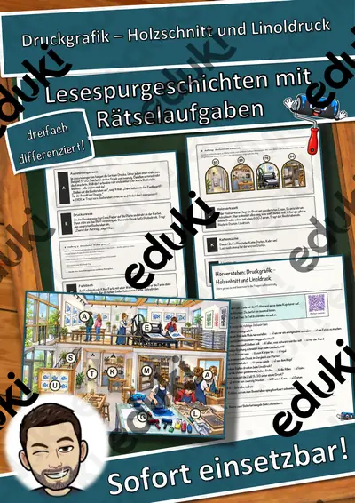
Druckgrafik – Holzschnitt und Linoldruck – Lesespurgeschichte mit Rätselaufgaben (Klasse 7)
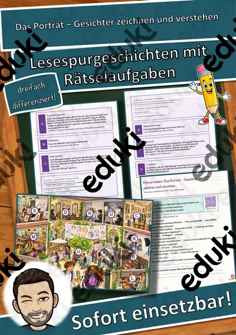
Das Porträt – Gesichter zeichnen und verstehen – Lesespurgeschichte mit Rätselaufgaben (Klasse 7)

Mensch und Natur in den Religionen – Lesespurgeschichte mit Rätselaufgaben (Klasse 7)
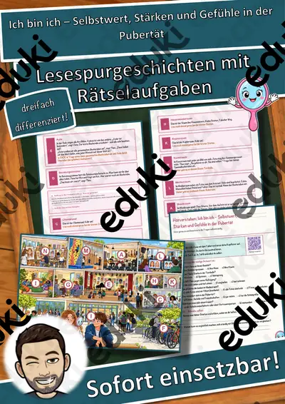
Ich bin ich – Selbstwert, Stärken und Gefühle in der Pubertät – Lesespurgeschichte mit Rätselaufgaben (Klasse 7)

Pilgern – Reise zu heiligen Orten der Weltreligionen – Lesespurgeschichte mit Rätselaufgaben (Klasse 7)
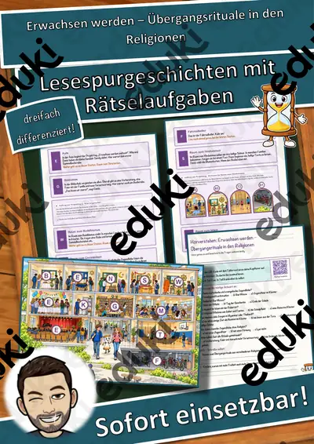
Erwachsen werden – Übergangsrituale in den Religionen – Lesespurgeschichte mit Rätselaufgaben (Klasse 7)

Heilige Schriften der Weltreligionen – Lesespurgeschichte mit Rätselaufgaben (Klasse 7)
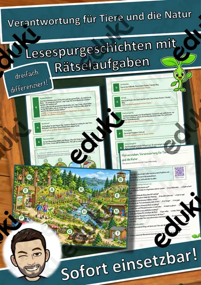
Verantwortung für Tiere und die Natur – Lesespurgeschichte mit Rätselaufgaben (Klasse 7)
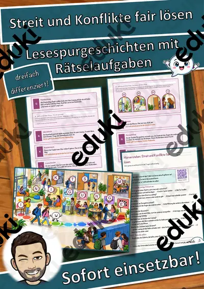
Streit und Konflikte fair lösen – Lesespurgeschichte mit Rätselaufgaben (Klasse 7)
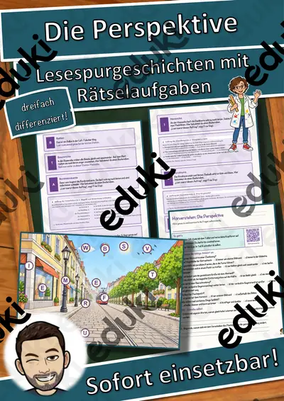
Die Perspektive – Lesespurgeschichte mit Rätselaufgaben (Klasse 7)
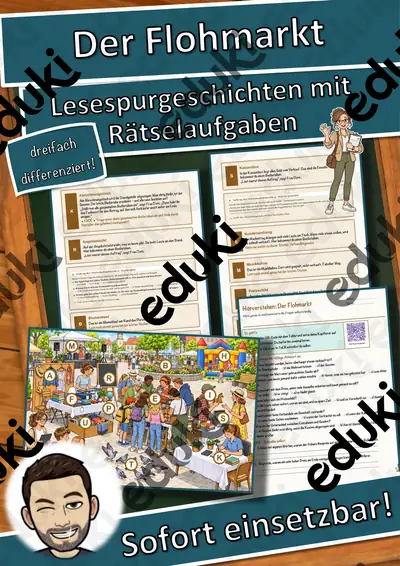
Der Flohmarkt – Lesespurgeschichte mit Rätselaufgaben (Klasse 7)
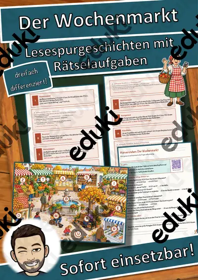
Der Wochenmarkt – Lesespurgeschichte mit Rätselaufgaben (Klasse 7)

Der Winterschlaf – Lesespurgeschichte mit Rätselaufgaben (Klasse 7)
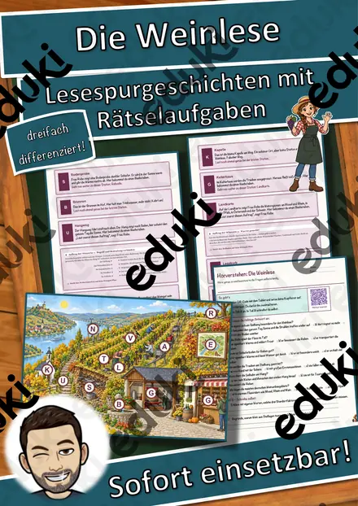
Die Weinlese – Lesespurgeschichte mit Rätselaufgaben (Klasse 7)

Der Vogelzug – Lesespurgeschichte mit Rätselaufgaben (Klasse 7)

Die Zähne – Lesespurgeschichte mit Rätselaufgaben (Klasse 7)

Das Ohr – Lesespurgeschichte mit Rätselaufgaben (Klasse 7)

Das Auge – Lesespurgeschichte mit Rätselaufgaben (Klasse 7)

Die Muskeln – Lesespurgeschichte mit Rätselaufgaben (Klasse 7)

Die Atmung – Lesespurgeschichte mit Rätselaufgaben (Klasse 7)

Die Verdauung – Lesespurgeschichte mit Rätselaufgaben (Klasse 7)

Das Skelett – Lesespurgeschichte mit Rätselaufgaben (Klasse 7)

Die Schlange – Lesespurgeschichte mit Rätselaufgaben (Klasse 7)

Die Nahrungskette – Lesespurgeschichte mit Rätselaufgaben (Klasse 7)
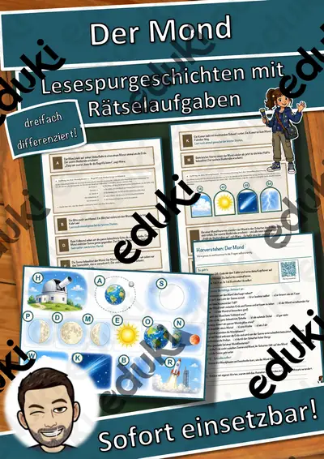
Der Mond – Lesespurgeschichte mit Rätselaufgaben (Klasse 7)

Der Vogel – Lesespurgeschichte mit Rätselaufgaben (Klasse 7)
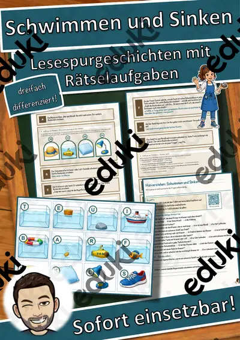
Schwimmen und Sinken – Lesespurgeschichte mit Rätselaufgaben (Klasse 7)
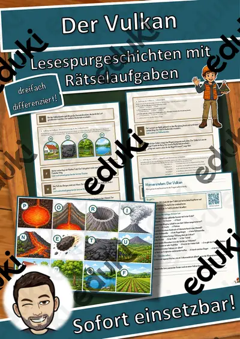
Der Vulkan – Lesespurgeschichte mit Rätselaufgaben (Klasse 7)

Die Honigbiene – Lesespurgeschichte mit Rätselaufgaben (Klasse 7)
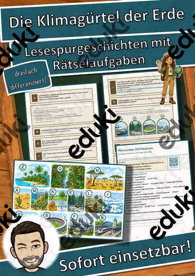
Die Klimagürtel der Erde – Lesespurgeschichte mit Rätselaufgaben (Klasse 7)
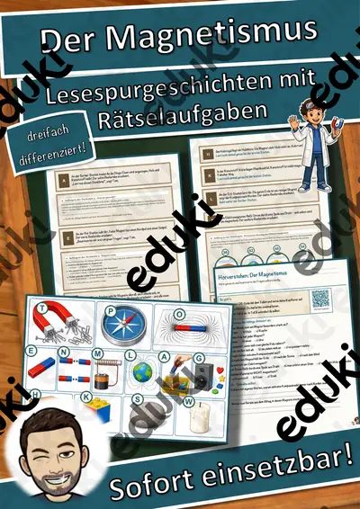
Der Magnetismus – Lesespurgeschichte mit Rätselaufgaben (Klasse 7)

Der Blutkreislauf – Lesespurgeschichte mit Rätselaufgaben (Klasse 7)
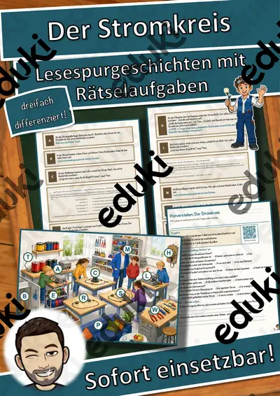
Der Stromkreis – Lesespurgeschichte mit Rätselaufgaben (Klasse 7)
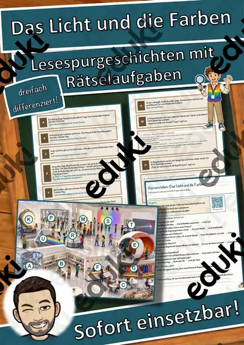
Das Licht und die Farben – Lesespurgeschichte mit Rätselaufgaben (Klasse 7)
Der tropische Regenwald – Lesespurgeschichte mit Rätselaufgaben (Klasse 7)

Der Bauernhof – Lesespurgeschichte mit Rätselaufgaben (Klasse 7)
Olympia in der Antike – Lesespurgeschichte mit Rätselaufgaben (Klasse 7)
Die Wetterstation – Lesespurgeschichte mit Rätselaufgaben (Klasse 7)
Die Physik-Werkstatt – Lesespurgeschichte mit Rätselaufgaben (Klasse 7)

Die Bibliothek – Lesespurgeschichte mit Rätselaufgaben (Klasse 7)

Der Werkraum – Lesespurgeschichte mit Rätselaufgaben (Klasse 7)
Der Computer – Lesespurgeschichte mit Rätselaufgaben (Klasse 7)
Die Schulküche – Lesespurgeschichte mit Rätselaufgaben (Klasse 7)

Der Mischwald – Lesespurgeschichte mit Rätselaufgaben (Klasse 7)
Die Landwirtschaft – Lesespurgeschichte mit Rätselaufgaben (Klasse 7)

Das Handwerk und die Zünfte – Lesespurgeschichte mit Rätselaufgaben (Klasse 7)
Das antike Rom – die Republik – Lesespurgeschichte mit Rätselaufgaben (Klasse 7)
Die Fugger – Kaufleute und Bankiers – Lesespurgeschichte mit Rätselaufgaben (Klasse 7)
Der Sonnenkönig – Lesespurgeschichte mit Rätselaufgaben (Klasse 7)
Die Reformation – Lesespurgeschichte mit Rätselaufgaben (Klasse 7)
Ein Jahr auf dem Fronhof – Lesespurgeschichte mit Rätselaufgaben (Klasse 7)
Kaiser gegen Papst – Lesespurgeschichte mit Rätselaufgaben (Klasse 7)
Aufbruch in unbekannte Welten – Lesespurgeschichte mit Rätselaufgaben (Klasse 7)
Aufbruch in die Renaissance – Lesespurgeschichte mit Rätselaufgaben (Klasse 7)
Der Bau der Kathedrale – Lesespurgeschichte mit Rätselaufgaben (Klasse 7)

Die Kaufleute der Hanse – Lesespurgeschichte mit Rätselaufgaben (Klasse 7)
Rhein-Hunsrück-Kreis Lückentext mit Wortspeicher Hörverstehen und Suchsel
Ostalbkreis Lückentext mit Wortspeicher Hörverstehen und Suchsel
Ortenaukreis Lückentext mit Wortspeicher Hörverstehen und Suchsel
Odenwaldkreis Lückentext mit Wortspeicher Hörverstehen und Suchsel
Landkreis Zwickau Lückentext mit Wortspeicher Hörverstehen und Suchsel
Landkreis Wolfenbüttel Lückentext mit Wortspeicher Hörverstehen und Suchsel
Landkreis Wittmund Lückentext mit Wortspeicher Hörverstehen und Suchsel
Landkreis Wittenberg Lückentext mit Wortspeicher Hörverstehen und Suchsel
Landkreis Wesermarsch Lückentext mit Wortspeicher Hörverstehen und Suchsel
Landkreis Weimarer Land Lückentext mit Wortspeicher Hörverstehen und Suchsel
Landkreis Waldeck-Frankenberg Lückentext mit Wortspeicher Hörverstehen und Suchsel
Landkreis Vulkaneifel Lückentext mit Wortspeicher Hörverstehen und Suchsel
Landkreis Vorpommern-Rügen Lückentext mit Wortspeicher Hörverstehen und Suchsel
Landkreis Vorpommern-Greifswald Lückentext mit Wortspeicher Hörverstehen und Suchsel
Landkreis Uckermark Lückentext mit Wortspeicher Hörverstehen und Suchsel
Landkreis Trier-Saarburg Lückentext mit Wortspeicher Hörverstehen und Suchsel
Landkreis Teltow-Fläming Lückentext mit Wortspeicher Hörverstehen und Suchsel
Landkreis Südwestpfalz Lückentext mit Wortspeicher Hörverstehen und Suchsel
Landkreis Südliche Weinstraße Lückentext mit Wortspeicher Hörverstehen und Suchsel
Landkreis Sömmerda Lückentext mit Wortspeicher Hörverstehen und Suchsel
Landkreis Sächsische Schweiz-Osterzgebirge Lückentext mit Wortspeicher Hörverstehen und Suchsel
Landkreis Stendal Lückentext mit Wortspeicher Hörverstehen und Suchsel
Landkreis Spree-Neiße Lückentext mit Wortspeicher Hörverstehen und Suchsel
Landkreis Sonneberg Lückentext mit Wortspeicher Hörverstehen und Suchsel
Landkreis Schmalkalden-Meiningen Lückentext mit Wortspeicher Hörverstehen und Suchsel
Landkreis Saalfeld-Rudolstadt Lückentext mit Wortspeicher Hörverstehen und Suchsel
Landkreis Rostock Lückentext mit Wortspeicher Hörverstehen und Suchsel
Landkreis Prignitz Lückentext mit Wortspeicher Hörverstehen und Suchsel
Landkreis Potsdam-Mittelmark Lückentext mit Wortspeicher Hörverstehen und Suchsel
Landkreis Ostprignitz-Ruppin Lückentext mit Wortspeicher Hörverstehen und Suchsel
Landkreis Offenbach Lückentext mit Wortspeicher Hörverstehen und Suchsel
Landkreis Oder-Spree Lückentext mit Wortspeicher Hörverstehen und Suchsel
Landkreis Oberspreewald-Lausitz Lückentext mit Wortspeicher Hörverstehen und Suchsel
Landkreis Oberhavel Lückentext mit Wortspeicher Hörverstehen und Suchsel
Landkreis Nordwestmecklenburg Lückentext mit Wortspeicher Hörverstehen und Suchsel
Landkreis Nordsachsen Lückentext mit Wortspeicher Hörverstehen und Suchsel
Landkreis Nordhausen Lückentext mit Wortspeicher Hörverstehen und Suchsel
Landkreis Neuwied Lückentext mit Wortspeicher Hörverstehen und Suchsel
Landkreis Märkisch-Oderland Lückentext mit Wortspeicher Hörverstehen und Suchsel
Landkreis Birkenfeld Lückentext mit Wortspeicher Hörverstehen und Suchsel
Landkreis Mittelsachsen Lückentext mit Wortspeicher Hörverstehen und Suchsel
Landkreis Meißen Lückentext mit Wortspeicher Hörverstehen und Suchsel
Landkreis Mecklenburgische Seenplatte Lückentext mit Wortspeicher Hörverstehen und Suchsel
Landkreis Mayen-Koblenz Lückentext mit Wortspeicher Hörverstehen und Suchsel
Landkreis Marburg-Biedenkopf Lückentext mit Wortspeicher Hörverstehen und Suchsel
Landkreis Mansfeld-Südharz Lückentext mit Wortspeicher Hörverstehen und Suchsel
Landkreis Mainz-Bingen Lückentext mit Wortspeicher Hörverstehen und Suchsel
Landkreis Ludwigslust-Parchim Lückentext mit Wortspeicher Hörverstehen und Suchsel
Landkreis Limburg-Weilburg Lückentext mit Wortspeicher Hörverstehen und Suchsel
Landkreis Leipzig Lückentext mit Wortspeicher Hörverstehen und Suchsel
Landkreis Kusel Lückentext mit Wortspeicher Hörverstehen und Suchsel
Landkreis Kassel Lückentext mit Wortspeicher Hörverstehen und Suchsel
Landkreis Kaiserslautern Lückentext mit Wortspeicher Hörverstehen und Suchsel
Landkreis Jerichower Land Lückentext mit Wortspeicher Hörverstehen und Suchsel
Landkreis Hildburghausen Lückentext mit Wortspeicher Hörverstehen und Suchsel
Landkreis Hersfeld-Rotenburg Lückentext mit Wortspeicher Hörverstehen und Suchsel
Landkreis Havelland Lückentext mit Wortspeicher Hörverstehen und Suchsel
Landkreis Harz Lückentext mit Wortspeicher Hörverstehen und Suchsel
Landkreis Görlitz Lückentext mit Wortspeicher Hörverstehen und Suchsel
Landkreis Groß-Gerau Lückentext mit Wortspeicher Hörverstehen und Suchsel
Landkreis Greiz Lückentext mit Wortspeicher Hörverstehen und Suchsel
Landkreis Gotha Lückentext mit Wortspeicher Hörverstehen und Suchsel
Landkreis Gießen Lückentext mit Wortspeicher Hörverstehen und Suchsel
Landkreis Germersheim Lückentext mit Wortspeicher Hörverstehen und Suchsel
Landkreis Fulda Lückentext mit Wortspeicher Hörverstehen und Suchsel
Landkreis Elbe-Elster Lückentext mit Wortspeicher Hörverstehen und Suchsel
Landkreis Eichsfeld Lückentext mit Wortspeicher Hörverstehen und Suchsel
Landkreis Darmstadt-Dieburg Lückentext mit Wortspeicher Hörverstehen und Suchsel
Landkreis Dahme-Spreewald Lückentext mit Wortspeicher Hörverstehen und Suchsel
Landkreis Cochem-Zell Lückentext mit Wortspeicher Hörverstehen und Suchsel
Landkreis Börde Lückentext mit Wortspeicher Hörverstehen und Suchsel
Landkreis Bernkastel-Wittlich Lückentext mit Wortspeicher Hörverstehen und Suchsel
Landkreis Bergstraße Lückentext mit Wortspeicher Hörverstehen und Suchsel
Landkreis Bautzen Lückentext mit Wortspeicher Hörverstehen und Suchsel
Landkreis Barnim Lückentext mit Wortspeicher Hörverstehen und Suchsel
Landkreis Bad Kreuznach Lückentext mit Wortspeicher Hörverstehen und Suchsel
Landkreis Bad Dürkheim Lückentext mit Wortspeicher Hörverstehen und Suchsel
Landkreis Anhalt-Bitterfeld Lückentext mit Wortspeicher Hörverstehen und Suchsel
Landkreis Alzey-Worms Lückentext mit Wortspeicher Hörverstehen und Suchsel
Landkreis Altenkirchen (Westerwald) Lückentext mit Wortspeicher Hörverstehen und Suchsel
Landkreis Altenburger Land Lückentext mit Wortspeicher Hörverstehen und Suchsel
Landkreis Ahrweiler Lückentext mit Wortspeicher Hörverstehen und Suchsel
Lahn-Dill-Kreis Lückentext mit Wortspeicher Hörverstehen und Suchsel
Kyffhäuserkreis Lückentext mit Wortspeicher Hörverstehen und Suchsel
Kreis Stormarn Lückentext mit Wortspeicher Hörverstehen und Suchsel
Kreis Steinburg Lückentext mit Wortspeicher Hörverstehen und Suchsel
Kreis Segeberg Lückentext mit Wortspeicher Hörverstehen und Suchsel
Kreis Schleswig-Flensburg Lückentext mit Wortspeicher Hörverstehen und Suchsel
Kreis Rendsburg-Eckernförde Lückentext mit Wortspeicher Hörverstehen und Suchsel
Kreis Plön Lückentext mit Wortspeicher Hörverstehen und Suchsel
Kreis Pinneberg Lückentext mit Wortspeicher Hörverstehen und Suchsel
Kreis Ostholstein Lückentext mit Wortspeicher Hörverstehen und Suchsel
Kreis Nordfriesland Lückentext mit Wortspeicher Hörverstehen und Suchsel
Kreis Herzogtum Lauenburg Lückentext mit Wortspeicher Hörverstehen und Suchsel
Kreis Dithmarschen Lückentext mit Wortspeicher Hörverstehen und Suchsel
Ilm-Kreis Lückentext mit Wortspeicher Hörverstehen und Suchsel
Hohenlohekreis Lückentext mit Wortspeicher Hörverstehen und Suchsel
Hochtaunuskreis Lückentext mit Wortspeicher Hörverstehen und Suchsel
Hochsauerlandkreis Lückentext mit Wortspeicher Hörverstehen und Suchsel
Heidekreis Lückentext mit Wortspeicher Hörverstehen und Suchsel
Erzgebirgskreis Lückentext mit Wortspeicher Hörverstehen und Suchsel
Enzkreis Lückentext mit Wortspeicher Hörverstehen und Suchsel
Eifelkreis Bitburg-Prüm Lückentext mit Wortspeicher Hörverstehen und Suchsel
Donnersbergkreis Lückentext mit Wortspeicher Hörverstehen und Suchsel
Burgenlandkreis Lückentext mit Wortspeicher Hörverstehen und Suchsel
Bodenseekreis Lückentext mit Wortspeicher Hörverstehen und Suchsel
Altmarkkreis Salzwedel Lückentext mit Wortspeicher Hörverstehen und Suchsel
Landkreis Verden Lückentext mit Wortspeicher Hörverstehen und Suchsel
Landkreis Vechta Lückentext mit Wortspeicher Hörverstehen und Suchsel
Landkreis Uelzen Lückentext mit Wortspeicher Hörverstehen und Suchsel
Landkreis Stade Lückentext mit Wortspeicher Hörverstehen und Suchsel
Landkreis Schaumburg Lückentext mit Wortspeicher Hörverstehen und Suchsel
Landkreis Rotenburg (Wümme) Lückentext mit Wortspeicher Hörverstehen und Suchsel
Landkreis Peine Lückentext mit Wortspeicher Hörverstehen und Suchsel
Landkreis Osterholz Lückentext mit Wortspeicher Hörverstehen und Suchsel
Landkreis Osnabrück Lückentext mit Wortspeicher Hörverstehen und Suchsel
Landkreis Oldenburg Lückentext mit Wortspeicher Hörverstehen und Suchsel
Landkreis Northeim Lückentext mit Wortspeicher Hörverstehen und Suchsel
Landkreis Lüneburg Lückentext mit Wortspeicher Hörverstehen und Suchsel
Landkreis Lüchow-Dannenberg Lückentext mit Wortspeicher Hörverstehen und Suchsel
Landkreis Leer Lückentext mit Wortspeicher Hörverstehen und Suchsel
Landkreis Holzminden Lückentext mit Wortspeicher Hörverstehen und Suchsel
Landkreis Hof Lückentext mit Wortspeicher Hörverstehen und Suchsel
Landkreis Hildesheim Lückentext mit Wortspeicher Hörverstehen und Suchsel
Landkreis Helmstedt Lückentext mit Wortspeicher Hörverstehen und Suchsel
Landkreis Harburg Lückentext mit Wortspeicher Hörverstehen und Suchsel
Landkreis Hameln-Pyrmont Lückentext mit Wortspeicher Hörverstehen und Suchsel
Landkreis Göttingen Lückentext mit Wortspeicher Hörverstehen und Suchsel
Landkreis Grafschaft Bentheim Lückentext mit Wortspeicher Hörverstehen und Suchsel
Landkreis Goslar Lückentext mit Wortspeicher Hörverstehen und Suchsel
Landkreis Gifhorn Lückentext mit Wortspeicher Hörverstehen und Suchsel
Landkreis Friesland Lückentext mit Wortspeicher Hörverstehen und Suchsel
Landkreis Emsland Lückentext mit Wortspeicher Hörverstehen und Suchsel
Landkreis Diepholz Lückentext mit Wortspeicher Hörverstehen und Suchsel
Keine Materialien gefunden – versuch einen anderen Suchbegriff oder Filter.